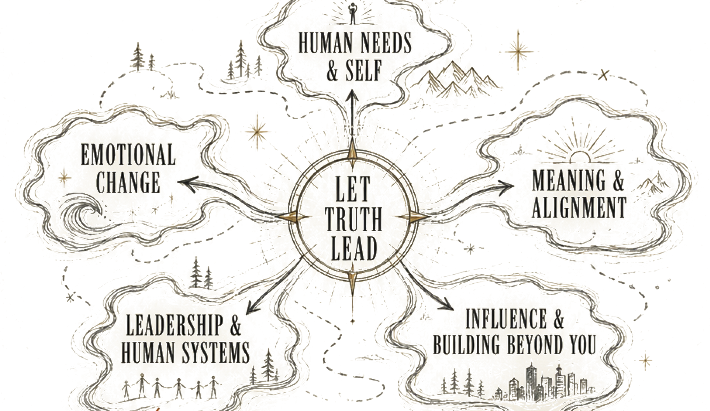
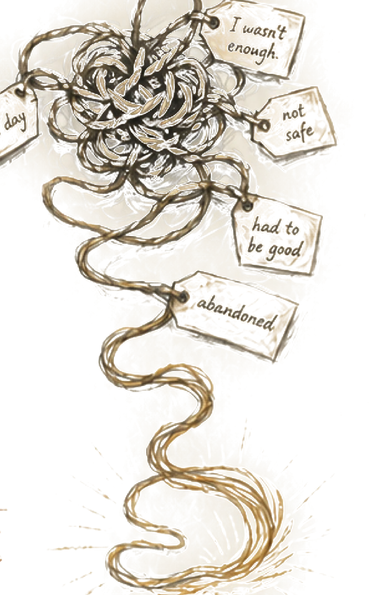
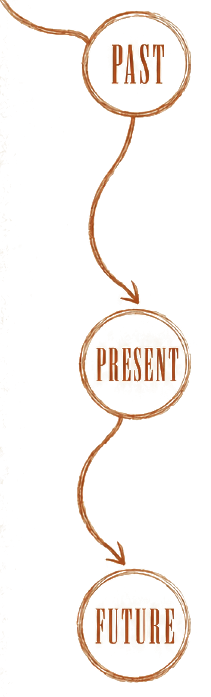
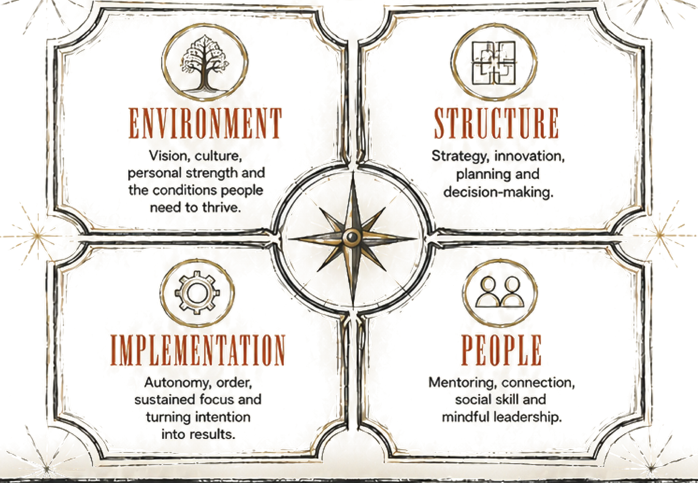
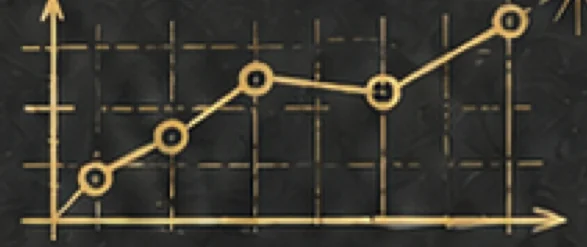
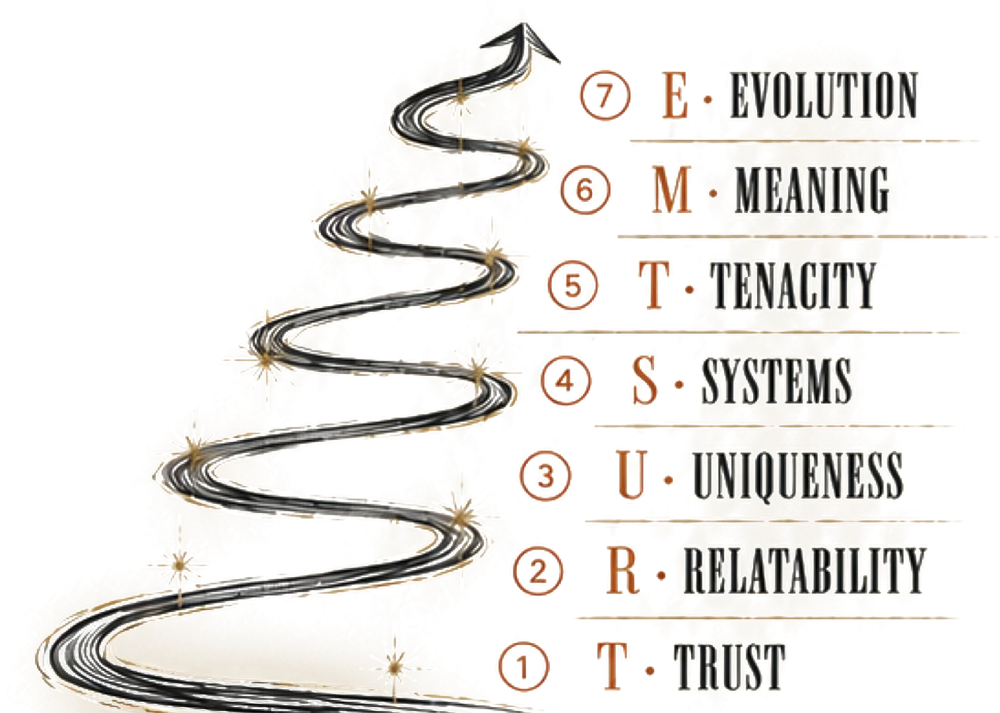
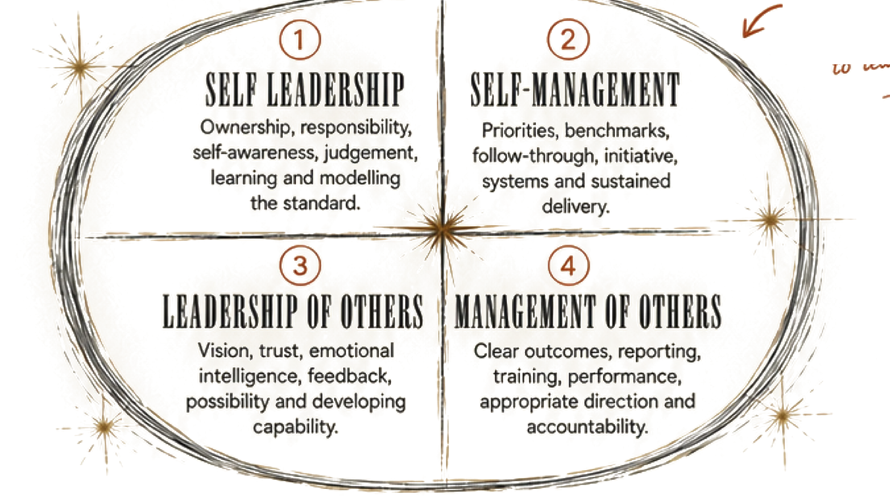

Most of what I've created began with something I could not explain, something I had lived, witnessed or watched people struggle with long after the obvious answers had failed.
So I kept following the question.

This is not one model. It is a body of work.
Some of it helps us understand what shaped us. Some helps us change what happens in the moment. Some helps leaders and organisations see where alignment is breaking. And some helps people sell, lead and build without manipulation, rescuing or becoming the entire asset.
Knowing why a pattern exists is not the same as being free to respond differently. These three models work at different points in the human-change journey.


Deep State Repatterning™
Human question:
Why does something that happened long ago still have so much power now?
Accurate explanation:
A complete methodology for finding the emotional history beneath a current pattern, loosening the charge and limiting beliefs attached to earlier experiences, reclaiming the authentic self and carrying new learning into action.
Detailed Personal History · emotional and belief release · Five Steps to Lack · Five Steps to Self-Love · future vision
What happens in the thirty seconds when I know better and still leave myself?
Accurate explanation:
EIT works in the live moment of activation. Catch the Point of Departure. Stay with the emotion beneath the protective response. Choose while remaining connected to yourself.
How do I build a life that feels meaningful because it is actually mine?
Accurate explanation:
A research-informed framework for strengthening meaning in life by connecting personal values with self-concordant goals, action, self-regulation and reflection.
Exploration → Elicitation → Direction → Action → Reflection
Developed through Remi's Master of Applied Positive Psychology capstone, drawing on positive psychology, evidence-based coaching, ACT and self-concordance research.
When something keeps failing, leaders often prescribe more effort. CAM asks a better question: where is alignment actually breaking?
Different gap. Different intervention.
The Critical Alignment Model
Created by Remi Pearson

I didn't want a model that only sounded clever
I hired researchers to challenge CAM, operationalise it and build a profiling tool that could be tested for reliability and validity.
4Domains
16Leadership dimensions
41Thinking characteristics
535People in the normative sample
The final 16 dimensions returned internal-consistency coefficients from .692 to .904. Factor analysis closely reproduced CAM's Environment, Structure, Implementation and People domains.

CAM is the model
It reveals where alignment is breaking and what kind of thinking or action the situation requires.
The thinking that got us here may not get us there
People, teams and organisations do not need the same thing at every stage. The useful question is not which level sounds best. It is which kind of thinking the present problem requires.
The T.R.U.S.T.M.E. Model
Created by Remi Pearson · informed by Spiral Dynamics

T.R.U.S.T.M.E. reveals the operating logic a person, team or organisation returns to, especially under pressure. Every level solves a problem, creates new limits and points toward the thinking required next.
You cannot solve a problem from the same thinking that created it.
A philosophy and practice of leadership built on truth, responsibility, accountability, healthy relationships and the ability to hold space. Set clear standards. Give honest feedback. Develop capable people. Stop rescuing, controlling or rewarding helplessness.
Truth
Responsibility
Accountability
Healthy relationships
Holding space
High standards and humanity belong in the same room.
Before we can lead and manage other people well, we have to be able to lead and manage ourselves. They are different capabilities, and confusing them creates a great deal of noise.
The Four Quadrants to Leadership
Developed and used by Remi Pearson.

Ninety per cent of effective leadership begins with the ability to lead yourself.
The tools that make it practical
Benchmarking & modelling excellence
Decide what excellent looks like. Find an aligned model of excellence. Study the thinking, process and standards. Apply it, measure it and adapt.
Research-informed practice, not a claim that everything must be invented from scratch.
Critical thinking criteria
What is the rationale? What facts are needed? What problem does this solve? Which CAM domain is actually weak? What are the consequences, costs and possibilities? Is the decision replicable and sustainable?
A decision tool for replacing reflex with inquiry.
The first 90 days leadership playbook
Listen and observe. Learn the culture and values. Diagnose Environment, Structure, Implementation and People. Establish benchmarks, dashboards, communication rhythms and feedback.
A field-tested application guide, not another abstract model.
Also in the toolkit
CAM Top Five System
Weekly priorities that keep 90-day goals moving.
Written & unwritten ground rules
The culture on paper versus what actually happens.
90-day review
Benchmarks, development, performance and the next cycle.
Truth before certainty. Standards before slogans. Capability before rescue.
Help people decide. Build something that doesn't need you.
These two bodies of work came from the same refusal: I did not want good people manipulated into buying, and I did not want talented founders trapped inside the thing they had built.
Ultimate Influence Consultative Sales
How do I help someone make a quality buying decision without scripts, pressure or bullshit?
Diagnose before prescribing. Understand the buyer's values, needs and decision process. Communicate intangible value clearly. Recommend only when there is a genuine match.
An idea should be useful enough to live beyond the page.
I love the process of discovery. But I do not want a clever-sounding model simply because it makes a good diagram. Where research can challenge, strengthen or operationalise an idea, I want it in the room.
The Research Thread
Values Alignment Model
Created through Remi's Master of Applied Positive Psychology capstone.
Research-informed by positive psychology, evidence-based coaching, self-concordance, values, goals, ACT and self-regulation.
Everything on this page was created by Remi Pearson, with intellectual foundations acknowledged where relevant. T.R.U.S.T.M.E. is informed by Spiral Dynamics. The Meta Dynamics Profiler is the measurement application of CAM.